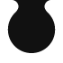
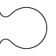

<main class="mainStyle about articles">
    <article>
        {% if site.articles.header-text.size > 0 %}
        <section class="page-header">
          <h1 class="subHeader">
            {{ site.articles.header-text }}
          </h1>
        </section>
        {% endif %}
    </article>
    <section class="puzzleContainer">
        {% for post in site.posts %}
            <div class="puzzleGrid">
         {%
            include article-summary.html
            url=post.url
            title=post.title
            date=post.date
            icon=post.icon
            author=post.author
            excerpt=post.excerpt
        %}

                    
                    
             
                    
             
             
         </div>
        {% endfor %}
    </section>
    <div style="clear: both;"></div>
</main>
